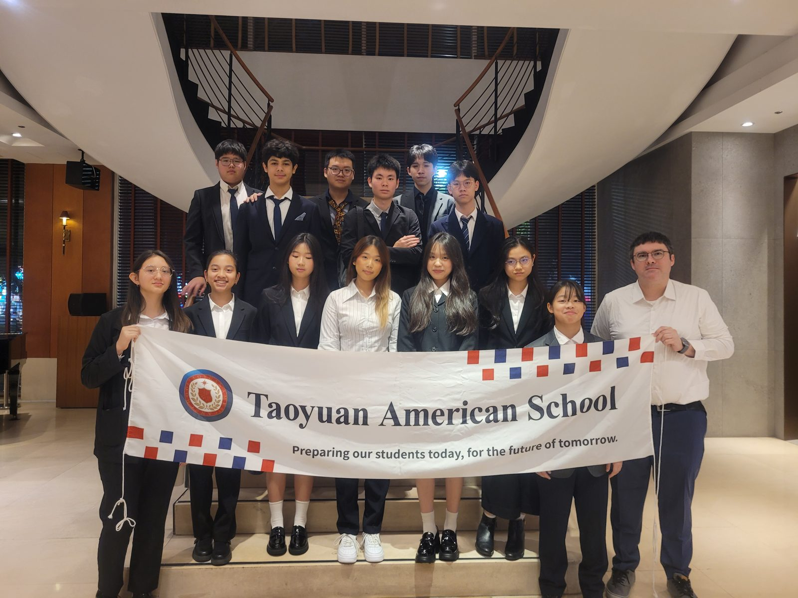
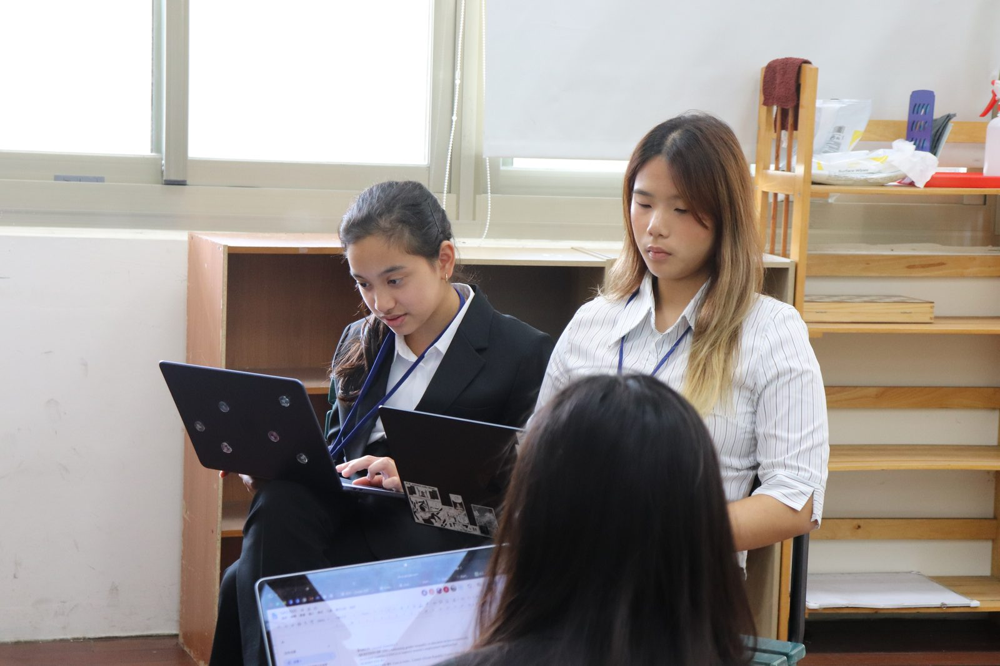
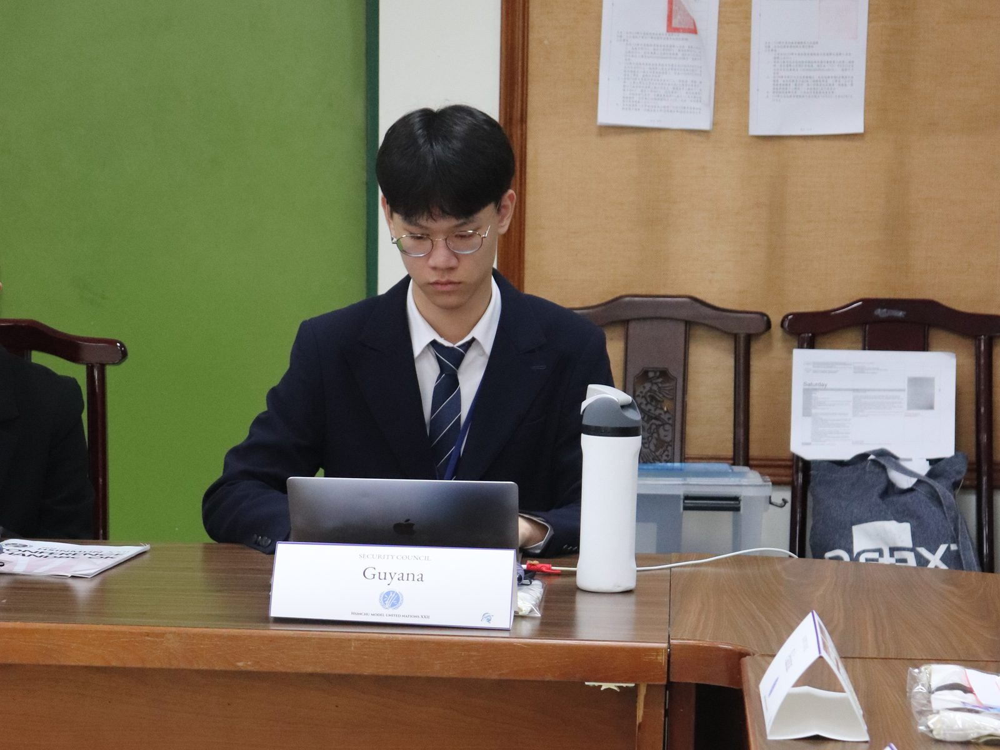
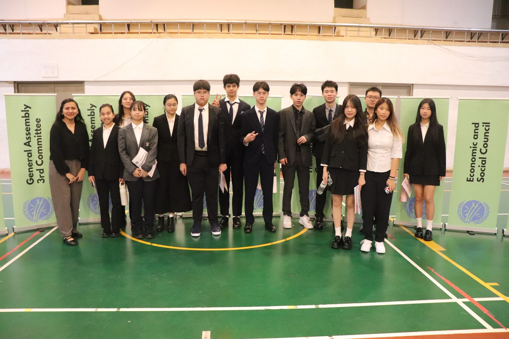

Jonus Liew
Under Jonus's leadership, the club has reached new heights this year. Notably, Jonus demonstrated exceptional diplomatic skill by serving as a Committee Chair at WJMUN in Japan, guiding international delegates through complex debates.

At Taoyuan American School (TYAS), Model United Nations (MUN) is a high-level academic simulation of the United Nations that prepares students to lead in a globalized world. Participants, known as delegates, step into the roles of diplomats representing nations or non-governmental organizations (NGOs) in simulated sessions of UN committees. Through rigorous research, delegates investigate international issues, engage in formal debate, and consult with peers to develop actionable solutions to the world's most pressing problems.
From October 16 to 18, 2026, 13 TYAS students took part in HSINMUN XXII, the 22nd Hsinchu Model United Nations, representing countries across nine committees, including the General Assembly, the Security Council, the Human Rights Council, the United Nations Development Programme (UNDP), and the Environment Committee.

Delegates researched their countries' positions, wrote and delivered opening speeches, and spent three days debating issues such as the crisis in Haiti, governance of the Arctic, rural poverty, and water scarcity. They gave speeches, asked points of information, and proposed amendments alongside students from schools across Taiwan.



Congratulations to all our delegates on their preparation and effort, and thank you to the HSINMUN organizers for hosting such a rewarding conference.
The success of the TYAS MUN program is driven by our dedicated student officers who lead by example both in the classroom and at international conferences.
Under Jonus's leadership, the club has reached new heights this year. Notably, Jonus demonstrated exceptional diplomatic skill by serving as a Committee Chair at WJMUN in Japan, guiding international delegates through complex debates.
Cherry joined MUN last year and represented TYAS at WJMUN. This year, she has stepped up as Vice President to mentor and guide our growing team of brand-new club members, drawing on her conference experience to ensure our delegation is prepared to succeed.
Hsinchu Model United Nations
Originally a local event, HSINMUN has grown into a premier international conference holding the prestigious THIMUN affiliation in Taiwan. This status is granted only to conferences that maintain the highest academic standards recognized by The Hague International Model United Nations Foundation. By participating in HSINMUN, our students engage in a higher caliber of debate and follow the exact parliamentary procedures used by the world's most elite programs.
Dominican International School Model United Nations
Founded in 2014, DISMUN has a long-standing tradition of excellence in Taipei. After years of hosting workshops and school-wide events, DISMUN evolved into a major annual conference that attracts top delegates from across the region. Participation in DISMUN allows our students to build on a decade of student-led leadership, focusing on the ability to simulate complex United Nations procedures with precision.
Taipei American School Model United Nations
As one of the largest conferences in Taiwan, TASMUN hosts over 400 delegates from 30 different schools. This year's theme, "One Small Act: Expanding the Pathways to Global Opportunity and Prosperity," encouraged our students to see diplomacy through the lens of service. Focused on Sustainable Development Goals 4 (Quality Education) and 8 (Decent Work and Economic Growth), our delegates tackled issues ranging from food security to the protection of cultural heritage, learning that global change often begins with a single, small act of connection.
West Japan Model United Nations
In a historic milestone, TYAS made its international debut at the Sixth WJMUN hosted by Fukuoka International School. Centered on the theme "Standing United, in Times of Crises," this conference challenged our students to exchange unique cultural perspectives with peers from around the world. Our delegates traveled to Japan to engage in innovative and constructive debates, proving that they can lead and collaborate effectively on the global stage while building lasting international contacts.
In 2026, TYAS celebrated a major milestone with its first-ever international Model United Nations trip to the 2026 West Japan Model United Nations (WJMUN) in Fukuoka, Japan.
Representing countries like the United States, Japan, and Germany, our delegates joined peers from international schools in Japan and Korea to tackle complex global issues. From the Economic and Social Council (ECOSOC) to the Human Rights Council (HRC) and the General Assembly, our students excelled in academic debate, diplomatic writing, and international collaboration.


A special congratulations to Jonus Liew, who demonstrated exceptional leadership serving as a Committee Chair. For many of our students, this was their first conference, and they returned with increased confidence, new global friendships, and a deepened understanding of international relations. We are incredibly proud of how our delegates represented TYAS on the world stage!